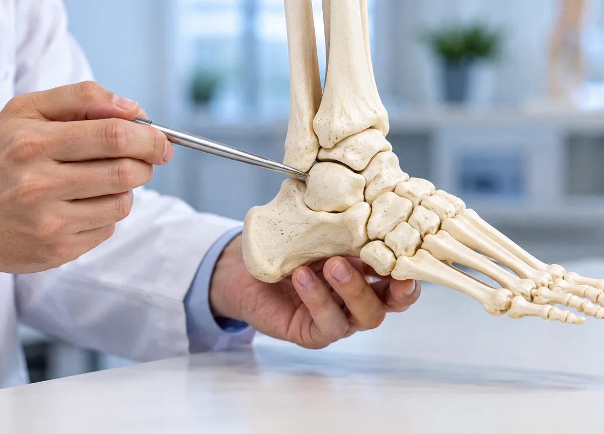
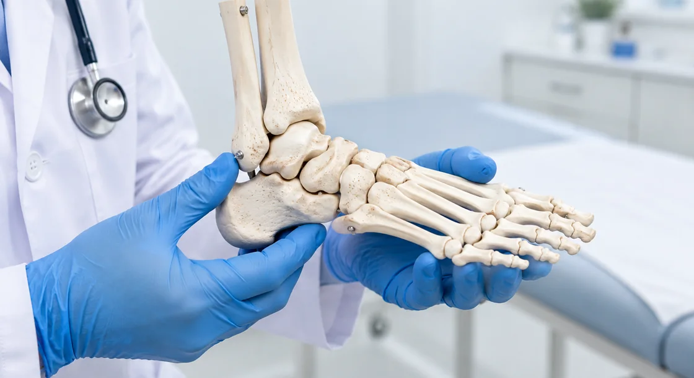
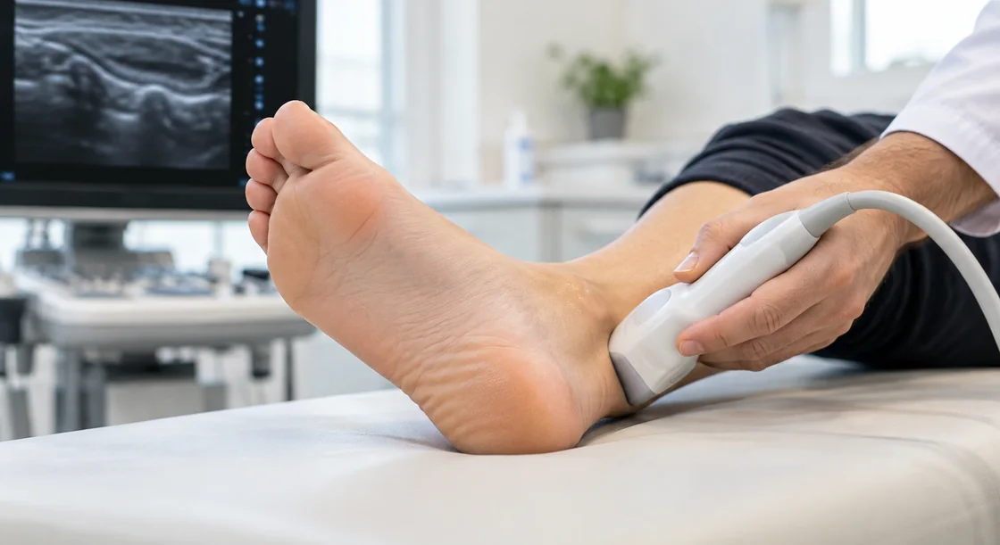
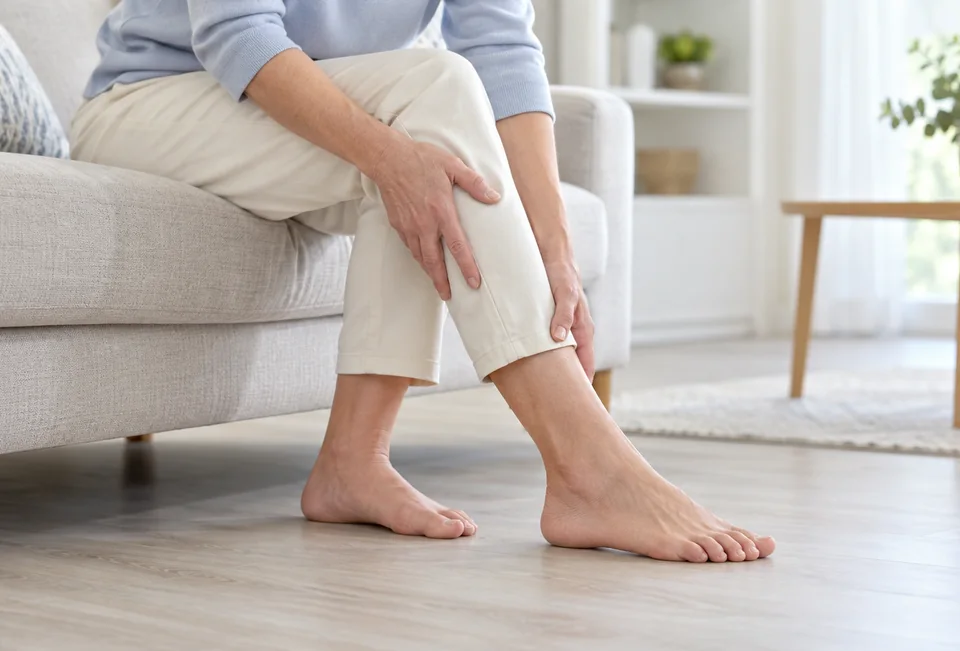

오르벨라 족부클리닉에서는 발의 모양과 관절의 움직임, 걷는 방식을 함께 살펴 불편의 원인에 맞는 치료를 상의합니다.
발과 발목은 몸의 무게를 받치며 한 걸음을 시작합니다. 뼈의 정렬이나 움직임에 작은 변화가 생겨도 통증과 보행 불편으로 이어질 수 있습니다.
아픈 부위만 살피기보다 서고 걷는 동작까지 확인합니다. 상태에 따라 비수술 관리와 수술을 검토하고 이후의 재활을 연결합니다.


발의 불편을 평가할 때는 걸음과 하중
분산을 함께 살핍니다.
오르벨라 정형외과는 발과 발목의 구조,
보행 습관을 함께 분석해
현재 상태에 맞는 치료
필요성을 정확히 판단합니다.
남아 있는 발의 기능을 지키는 방법부터 살핍니다.
비수술 관리와 수술의 필요성을 순서대로 살펴
현재 상태에 알맞은 치료의 범위를 상의합니다.
편안하게 서고 걷는 생활을 치료 목표로 삼습니다.
회복 뒤에도 균형 있게 걷기 위한 재활을
통해
일상 복귀를 체계적으로 지원합니다.

발은 전신 균형의 시작점입니다.
평소의 자세와 걸음걸이를 함께 점검하며
배운 관리 방법을 일상에서 이어 가도록 돕습니다.

발목염좌발목을 지탱하는 인대가 접질림이나 충격으로 늘어나거나 찢어지는 손상입니다. 처음의 통증이 줄어도 움직임과 근력, 균형이 충분히 돌아오지 않으면 불안정감이 남을 수 있습니다. 손상 정도를 확인한 뒤 보호와 재활의 범위를 단계적으로 정합니다.
소아/성인 평발발 안쪽의 아치가 낮아져 체중을 받치는 모양이 달라진 상태입니다. 외상 뒤 변화, 힘줄의 기능 저하나 긴장, 신경·근육 질환 등 여러 요인을 살핍니다. 깔창 등 비수술 방법을 먼저 검토하고, 증상과 변형이 큰 경우에는 뼈와 관절의 정렬을 조정하는 수술을 상의합니다.
발바닥 티눈과 굳은살발뼈의 모양이나 정렬 때문에 발바닥 일부에 압력이 집중되면 굳은살과 통증이 반복될 수 있습니다. 피부 상태와 신발, 보행을 살피며 압박을 줄이는 관리를 검토합니다. 재발이 잦거나 불편이 심한 경우에는 뼈의 정렬을 교정하는 치료도 상담합니다.
Orvella Clinic, Care for Everyday Life